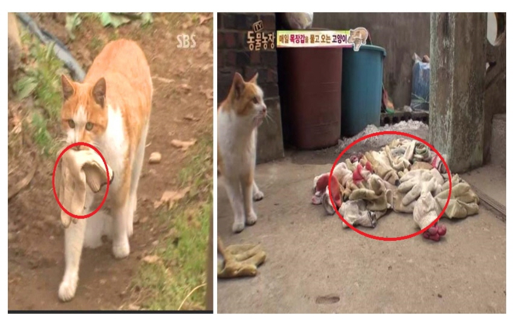
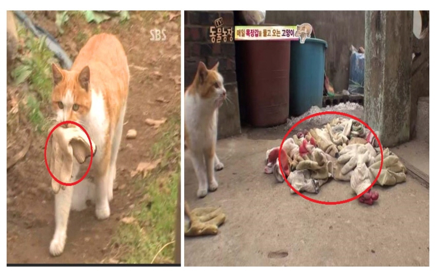
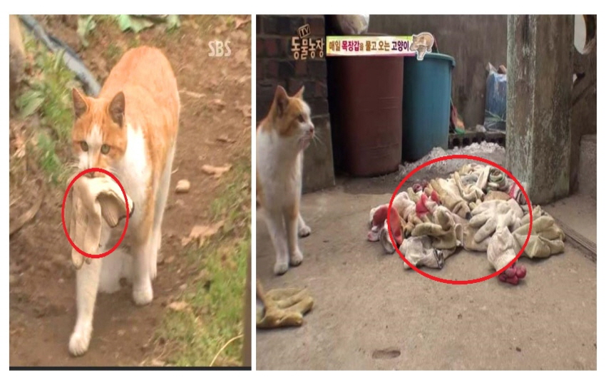

고양이의 보은?
사람에 의해 큰 도움을 받거나 목숨을 건진 고양이들 중 은혜를 갚는 일명 고양이 보은 사례들이 몇몇 존재한다. 한국에서는 자신을 구해준 아저씨를 화재속에서 구하려 크게 울어 깨워서 구출한 tv방영 사례가 있다. 이런 사례들로 보아, 고양이에게는 고양이만의 깊은 충성심과 자신을 도와준 사람에 대한 애정이 있음을 다시한번 알 수 있다.
 
